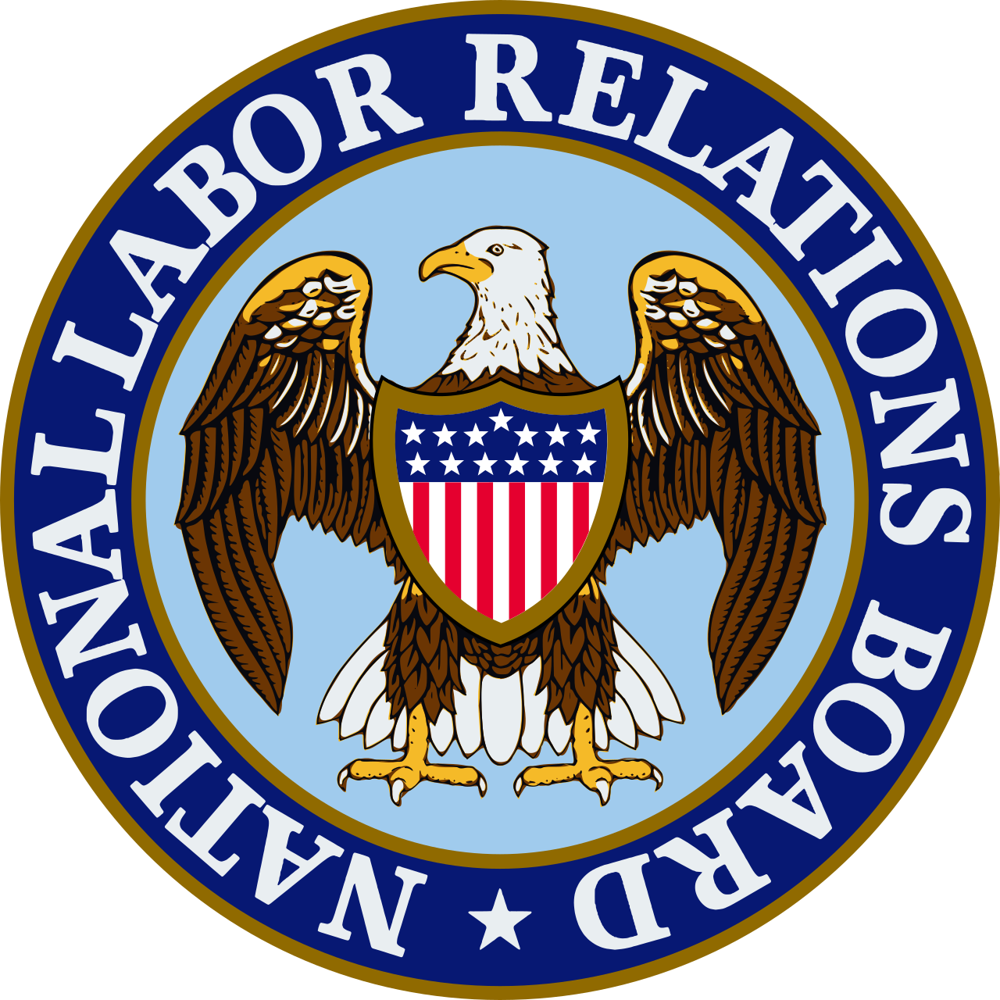

Vol. I · No. 85 · Wednesday, August 12, 2026 · 18 items · ~17 min read
A studio threatens to leave the state rather than settle, and a judge declines to believe that ChatGPT wrote the confession.
The Splash · Corporate · Sacramento
Paramount tells California it will start leaving on October 1 if the attorney general will not talk settlement
Rob Bonta, the California attorney general leading the multistate suit to block the Paramount Skydance acquisition of Warner Bros. Discovery, who called the studio's relocation threat an attempt to blackmail the state. — California Department of Justice, via Wikimedia Commons
David Ellison told senior Paramount executives on Tuesday that he will begin moving the company out of California on October 1 unless Bonta's office agrees to open settlement talks on the states' suit to block the $111 billion acquisition of Warner Bros. Discovery, Deadline reported, with Georgia, Texas and Tennessee under consideration and a five-year plan to shift most studio jobs out of state. October 1 is not an arbitrary date. It is the day Paramount starts accruing a of $7 million a day under the merger agreement if the deal has not closed, which means the studio has put its exit and its penalty clock on the same calendar page.
Hours later, at Politico's California Agenda conference in Sacramento, the attorney general answered. Bonta said he would consider , meaning the separation of corporate entities in the markets the complaint challenges, and rejected behavioural ones. Ellison's public pledge that the combined company would release thirty films a year he dismissed as "an old, stale promise." He called the relocation threat "another attempt to blackmail the state into letting an illegal deal through," said a CNN divestiture would not answer a complaint that has "little, if any, mention of CNN," and rejected the claim that the case is politically driven with a flat "false. Yesterday, false. Today, false. Tomorrow, false." He declined to confirm reporting that Governor Newsom had pressed him to settle, saying only that he keeps private conversations private.
The complaint alleges harm in three markets, wide-release films, blockbuster films and cable programming, and is set for trial in March 2027. That date is the whole problem. A studio cannot carry a $7 million daily accrual for eighteen months while a state attorney general litigates, which is why the pressure is being applied through a jobs threat rather than a brief. , Paramount's chief legal officer, was booked to speak at the same conference later in the day, which is an unusually direct way to hold a negotiation.
"Literally, in every development in this case, we have won and they have lost."
— Rob Bonta, California attorney general, August 11
Why it mattersThe interesting fight here is doctrinal, not political. Delrahim spent his time at the Antitrust Division arguing that conduct promises are unenforceable and structure is the only real remedy, and Bonta has now used that exact position to refuse his client's output pledge. A company is being told its own lawyer was right.
Zelensky says the missiles that killed six in Zaporizhzhia were North Korean
At least six civilians were killed and nineteen wounded in the overnight Russian strike on , with a separate count from the city's steel plant putting seven workers dead and twenty-one injured at that site alone. Nationwide tallies across Zaporizhzhia, Dnipropetrovsk and Kyiv ran between nine and twelve. What made Tuesday different was the attribution. Volodymyr Zelensky said the attack combined North Korean ballistic missiles with Russian hypersonic cruise missiles and guided aerial bombs, the first time he has tied a specific lethal strike on a Ukrainian city to munitions supplied by Pyongyang.
The line he built on it is the one that will travel. "This is the first time they cannot wage war without supplements from North Korea," Zelensky said in his nightly address, arguing that rising ballistic production, imported equipment and mobilisation preparation together show Moscow "preparing not for peace, but for escalation." He had said on Monday that Russia has decided to station a further 30,000 to 50,000 North Korean troops on its own soil, and he pushed the consequence outward, warning that every missile fired at a Ukrainian city is a live test that corrects Pyongyang's "shortcomings and blind spots" at the eventual expense of Japan, South Korea and the Philippines. Fox News separately reported a North Korean missile unit deployed inside Ukraine fielding as many as 120 ballistic missiles and six launchers. The between Putin and Kim is the paper this runs on.
Why it mattersA sanctions regime aimed at Russian production capacity does not reach a supply chain that starts in Pyongyang, which is the argument the Senate's new sanctions bill has not yet had to answer. Attribution of a specific strike is what turns that gap from an analyst's point into a legislative one.
Anthropic contracts $9.1bn of compute from a bitcoin miner, through June 2048
Anthropic signed a twenty-year capacity agreement with worth $9.1 billion, running through June 2048 and drawing on 191 megawatts of IT capacity at the miner's Rockdale, Texas campus. Two optional five-year extensions would take the total to roughly $16.1 billion. The buildout is staged, with 96 megawatts due online by December 2027 and the full 191 by June 2028. Riot shares rose 17 percent on the disclosure and dragged IREN, Applied Digital and TeraWulf up with them. Bernstein moved its Riot target to $35 and Citi to $32, calling the agreement transformational, all of which sat oddly beside the $237 million quarterly net loss the company had just reported.
This is the third large compute commitment Anthropic has made in fifteen months, after roughly $45 billion of capacity from Elon Musk's xAI in May 2026 and a $10 billion six-year Norway agreement with Volta Infra Holdings, and it is a different instrument from the Macquarie and GIC joint venture disclosed on Monday. That was ownership. This is a lease, and a very long one. The structure reads like a lifted out of the power sector, with the tenant taking twenty-two years of price and volume risk so the landlord can finance the build. The counterparty is a company whose original business was , which after the 2024 halving has become the business of owning cheap interconnected power and renting it to somebody else.
Why it mattersA twenty-two-year offtake from a company that lost $237 million last quarter is a credit document before it is a technology document. Somebody has to underwrite the tenant's ability to pay through 2048, and there is no comparable in this asset class yet.
H&R REIT agrees to be taken apart in a C$6.7bn deal, with Blackstone taking the industrial
H&R Real Estate Investment Trust agreed on Tuesday to sell all of its assets in a transaction valued at about C$6.7 billion including assumed debt, structured as a court-approved under the Business Corporations Act (Alberta). Unitholders receive C$4.28 in cash plus 0.5688 units of GO Residential REIT for each H&R unit, C$12.01 of upfront value, a 14.5 percent premium to the unaffected June 10 close before Blackstone talks leaked. The buyers are a consortium: GO Residential takes the twenty-three Lantower residential properties, half of the Jackson Park tower in New York, the Gotham Centre office building, half of Miami's River Landing and Lantower's Dallas headquarters, along with C$550 million of debentures and about US$1.1 billion of property debt. Blackstone Real Estate takes Canadian industrial for cash, Crestpoint and PSP Investments take the co-owned industrial, and CRAL, controlled by the family of executive chairman Tom Hofstedter, takes the rest.
That last line is why the deal is papered the way it is. A buying group that includes the chief executive's family vehicle makes this a related-party business combination under , which forces an independent formal valuation and a majority-of-the-minority vote excluding CRAL and its joint actors. The independent trustees took a fairness opinion from CIBC and a second opinion plus the formal valuation from National Bank. The fee structure is asymmetric and deliberately so, with H&R owing roughly C$102 million on a superior-proposal walk, GO owing about C$27 million, and a separate C$136 million if the purchaser fails to fund. A special meeting is expected in October and closing in the fourth quarter.
Why it mattersThis is what a conflicted buyout looks like when the process is built to survive review rather than to move fast: two fairness opinions, a formal valuation, a minority vote the insider cannot swing, and a reverse fee larger than the target's own. The cost of that architecture is four months to a vote.
Brussels writes a labelling rule and San Francisco applies it to the whole world, while OpenAI moves its offensive-security models behind an enterprise procurement desk.
AI · San Francisco
Anthropic will mark every sentence Claude writes, everywhere, not just in Europe
Anthropic's wordmark. The company will apply an imperceptible watermark at the model level, so output carries the mark regardless of which interface or cloud it was generated through. — Anthropic, via Wikimedia Commons
Anthropic said on Tuesday it will embed an imperceptible watermark in text generated by Claude, applied at the model level and worldwide rather than fenced to European users. Coverage runs across the consumer app, the developer platform, Claude Code, Claude Cowork, Claude Tag, and Claude as served through Amazon Web Services, Google Cloud and Microsoft Foundry. The immediate cause is the transparency obligation, which took effect on August 2 and carries penalties of up to fifteen million euros or three percent of global turnover. Applying it globally rather than geo-fencing it is a textbook instance of the , where the cost of running one compliant product beats the cost of running two.
The company was careful about what the mark proves, and the caveats are the substance. survives copy and paste and, Anthropic says, may persist through some editing, but heavy revision, paraphrase, translation or mixing with other writing can wash it out entirely. More importantly, the mark is described as a signal that content was processed by Claude and not as proof of authorship: a document run through Claude only for proofreading or translation can carry it, and an absence of the mark proves nothing about whether Claude was used. That is the honest position and also the useless one for the reader who actually wants to know whether a brief was written by a person, which is the question every law school, court and general counsel is currently trying to answer with tools built on the assumption that can be recovered after the fact.
Why it mattersA mark that fires on proofreading and dies on paraphrase is a poor evidentiary instrument, which will not stop anyone from treating it as one. The first sanctions motion arguing that a filing carried the watermark is a matter of months away, and the correct answer is that it proves the document met a model, not who wrote it.
OpenAI puts its offensive-security models on Amazon Bedrock, behind a vetting gate
OpenAI said on Tuesday that both tiers of its Daybreak cybersecurity program are now available to eligible enterprise customers through . Daybreak Blue carries frontier general-purpose models including GPT-5.6 Sol with safeguards tuned for authorised defensive work. Daybreak Red carries GPT-5.6 Cyber, the model trained for authorised vulnerability research and exploit validation, which is to say for finding and chaining them. Both run in the AWS US East region, reachable through the Bedrock console or OpenAI's Responses API, and both sit behind enrolment in a programme OpenAI calls .
The models are described as running with zero-operator access enforced at the chip, meaning OpenAI's own staff are cryptographically barred from seeing the customer code and vulnerability data passing through, which is the assurance a security team needs before it hands its unpatched flaws to a vendor. Monday's news was the capability. Tuesday's is the distribution layer, and the distribution layer is the part that determines who actually gets to use it, because a security organisation that cannot buy a tool through its existing cloud contract mostly does not buy it. The governance question this raises is not new but is now concrete. A vendor is selling exploit-development capability, restricting it by private contract rather than by law, and administering the vetting itself.
Why it mattersExport controls, dual-use rules and the Wassenaar intrusion-software language were all written for code that ships. None of them cleanly reach a model gated by a vendor's own enrolment programme, and the first regulator to notice that gap will be writing the rule everyone else copies.
A REIT sells converts and buys back its own stock with the proceeds, the SEC schedules its first crypto rulemaking in ninety years, and a hotel owner funds an Orlando purchase off two markets at once.
Corporate · San Diego
Realty Income upsizes to $875m of converts and spends a fifth of the proceeds buying back its own shares
The New York Stock Exchange, where Realty Income trades under the ticker O. The trust priced its convertible off a $61.89 close and immediately repurchased three million shares against it. — Wikimedia Commons
Realty Income priced $875 million of 3.750 percent convertible senior notes due 2031 on Tuesday, upsized from the $750 million announced, in a placement to qualified institutional buyers settling August 14, with a thirteen-day option for a further $125 million. The initial conversion rate is 13.7512 shares per $1,000, an initial conversion price of about $72.72 and a 17.5 percent to the $61.89 close. The notes are non-callable before August 20, 2029, and callable after only if the stock holds above 130 percent of the conversion price. Net proceeds run to roughly $859 million.
Where that money goes is the more instructive part. About $29.1 million funds struck at a cap price of about $83.55, a 35 percent premium, which lifts the effective dilution threshold well above the stated conversion price. Another $188.7 million goes to repurchasing roughly three million shares in privately negotiated transactions executed concurrently with pricing, through an initial purchaser acting as agent. That last mechanic is the elegant bit: the investors buying the convertible want to short the stock to hedge their delta, and the issuer's simultaneous buyback supplies the shares to do it, which is what lets a deal this size price without the underlying collapsing. The remainder pays down the revolver and commercial paper and funds acquisitions. The trust has now declared 673 consecutive monthly dividends across a portfolio of more than 15,500 properties.
Why it mattersRead as a single instrument, this is a company selling cheap optionality on itself, buying back the most valuable part of that optionality with a capped call, and retiring stock into the hedging demand its own deal created. The 3.750 percent coupon is the least interesting number in the release.
The SEC will vote Friday on the first crypto-specific rulemaking in its history
The Securities and Exchange Commission posted a setting an open meeting for Friday, August 14 at ten in the morning, with a single item on the agenda: whether to issue a release proposing a tailored offering regime for certain involving crypto assets, under a framework being called Regulation Crypto Assets. It would be the first formal crypto rulemaking in the agency's ninety-year history and the first under Chairman Paul Atkins.
What Friday produces, if it passes, is a proposal and not a rule. A vote opens a comment period expected to run two to three months under ordinary procedure, followed by revision and a separate adoption vote, so nothing binds this week and probably nothing binds this year. The reason it matters anyway is the venue. Crypto market-structure legislation has stalled in Congress, and an agency proposing a registration pathway by rule is doing through administrative process what the CLARITY Act failed to do through statute. That is a durable position only until a court is asked whether the Commission had authority to define the category by rulemaking rather than adjudication, which is the question the comment file will be built to answer.
Why it mattersAn agency legislating around a deadlocked Congress is the defining administrative-law fight of the decade, and this one arrives with a clean record and a well-funded industry ready to comment. Watch the proposal's discussion of statutory authority more closely than its substance.
Ryman funds a $1.38bn Orlando purchase off both markets in two days, and hedges the deal in the indenture
Ryman Hospitality Properties priced $700 million of 6.250 percent senior notes due 2035 on Tuesday through its RHP subsidiaries, a Rule 144A and placement closing August 25, a day after pricing 5.1 million shares of common stock at $117.00 for about $597 million of gross proceeds. Together with cash on hand the two fund the roughly $1.38 billion purchase of the JW Marriott Orlando Grande Lakes and the Ritz-Carlton Orlando, Grande Lakes. Neither offering is contingent on the other closing.
The bondholder protection is the clause worth noting. The notes carry a at 100 percent of issue price plus accrued interest if the Grande Lakes acquisition does not complete, while the notes' own closing is not conditioned on that acquisition. So the money comes in first and goes back out if the deal dies, which is how an issuer buys certainty of funds without asking bondholders to underwrite deal risk they were not paid for. Ryman's existing portfolio runs to five Gaylord convention resorts and two JW Marriotts, about 12,364 rooms and more than three million square feet of meeting space, all managed by Marriott, alongside its roughly 70 percent of Opry Entertainment Group held through a .
Why it mattersEquity on Monday, bonds on Tuesday, and a redemption clause that unwinds the bonds if the asset never arrives. That sequencing is the plain-vanilla version of acquisition finance, and it is worth knowing cold precisely because nobody writes a note about it.
An employer blames a chatbot for its own filing, a firm matches the market and pays next year, and Paul Weiss keeps buying capital markets partners.
Law · Fort Worth
A judge declines to believe that ChatGPT wrote the confession

The seal of the National Labor Relations Board, whose administrative law judge rejected an employer's claim that a chatbot inserted the unlawful reason for a firing into its own state filing. — National Labor Relations Board, public domain, via Wikimedia Commons
An , Sharon Steckler, ruled against the auto-parts company Autofit over the firing of an administrative assistant, Daniela Melendez, sixteen days after she told a coworker she made $22 an hour and the coworker asked management for the same. In its written explanation to the Texas Workforce Commission, the company said Melendez was terminated for "serious breaches of confidentiality," including that she "shared pay details with colleagues." That is a facially unlawful reason, because discussing pay with coworkers is under the Act.
Autofit first argued the sentence meant something else, namely misappropriated sales commissions, and the judge did not accept the reading. It then argued, through counsel at trial, that the language was not the company's at all. The employee who prepared the filing testified she had used the free version of ChatGPT to make it sound more professional, pasted the output straight into the state form, could not recall whether she reviewed it, and assumed the payroll provider would catch any errors. Steckler was unpersuaded and said why with unusual precision. "Guevara would have us believe that ChatGPT made up the language that sensitive information includes pay," she wrote. "For example, why didn't ChatGPT say another type of sensitive information, like trade secrets." She added that even if the model had produced it, "Guevara could have reviewed it, found it inaccurate, and removed the part about pay." Sixteen were pleaded, including a Seventh Amendment jury demand and an Article II challenge to the Board's constitutionality. All were rejected. The remedy is reinstatement, backpay, compensation for other pecuniary harm, expungement, and a sixty-day notice posting.
Why it mattersThe novel defence is not that the model hallucinated. It is that a human signed and filed the hallucination and then offered the machine as the author. Steckler's answer, that a reviewable draft is still your draft, is the rule every court will land on, and it is the reason the interesting AI liability question is about verification and not about generation.
Ice Miller matches the Milbank scale in New York and pays it starting in January
Ice Miller announced a new associate salary scale for its Manhattan office, matching the for first- and second-year associates and raising the rest of the structure on what the firm calls a customised basis. The catch sits in the effective date. The new scale does not start until January 1, 2027, so associates get the announcement now and the money in five months, which is a match in the press release and something rather less than one in the paycheque.
New York office managing partner Chase Stuart tied the move directly to practice building, saying the firm's "private equity and private credit practices have grown substantially over the last five years, both in the sophistication of the work and the strength of our client relationships," and framing the raise as reinforcing a commitment to becoming "a premier destination for talented transactional lawyers in New York." That is the honest logic of the whole exercise. An Indianapolis-founded firm buying its way into Manhattan deal work has to clear the market rate or lose every recruitment it enters. The broader cycle remains unresolved, with only a handful of firms having matched since June and still silent.
Why it mattersA deferred match is a real signal about firm economics and a free option on the market moving again before January. Anyone comparing offers this recruiting season should read the effective date before the number.
Paul Weiss takes two more capital markets partners, from Cooley and Ropes & Gray
announced on Tuesday that Peter Byrne has joined from Cooley and Tristan VanDeventer from Ropes & Gray, both as partners in the within the corporate department, resident in New York. Both are described as bringing decades of work for public companies, private equity sponsors, investment banks and corporate issuers, and both were partners at their prior firms rather than counsel promotions.
Two partners is not news on its own. The pattern is. Paul Weiss has separately taken a finance trio out of Sidley this year and another capital markets partner out of Ropes & Gray earlier in 2026, which is a sustained buildout rather than opportunistic hiring, and it is running in a market where the same firms are reportedly taking private-equity meetings about selling stakes in themselves to fund exactly this kind of expansion. A is bought with a guarantee, and guarantees at this level are the line item that made outside capital look interesting to firms that do not otherwise need money.
Why it mattersThe firms competing hardest for capital markets partners right now are the same ones taking the private-equity call. That is not a coincidence, it is the causal chain, and it runs from lateral guarantees to balance sheet to ownership structure.
Beijing sails a frigate east of Taiwan with a foreign navy for the first time, Colombia counts its dead three days into a new presidency, and Libya's largest refinery burns.
News · Beijing · single-tier coverageC
China will drill with Indonesia in the waters east of Taiwan, and Taipei calls it a provocation
A People's Liberation Army Navy Type 054A frigate of the Jiangkai II class, the type of the Honghe, which Beijing says will exercise with an Indonesian frigate east of Taiwan. This is a sister ship, not the vessel itself. — Wikimedia Commons
China's Ministry of National Defence announced on Tuesday that the Honghe will conduct a navigation exercise with an Indonesian navy frigate in mid-August in waters east of Taiwan. The statement gave no dates, no coordinates and no route, and Indonesia's military had said nothing publicly a day later. What is new is not the drill but the geography. Beijing has never before exercised with a foreign navy in the waters east of the island, which is the side facing the Pacific and the side any American relief would come from.
Taiwan's condemned it as dangerous and as political manipulation, calling it "exercises in name, expansion in fact," aimed at creating a false impression internationally that Beijing holds jurisdiction over the waters east of the island, and demanded China "immediately stop this dangerous behaviour that undermines the status quo." Chinese state commentary framed the drill as demonstrating sovereign rights and jurisdiction over the east of Taiwan, a framing attributed to Beijing as an actor rather than verified. It follows Chinese coast guard patrols off the east coast that began in June, and arrives as Taipei's cabinet proposes a 16 percent increase in military spending to roughly $31 billion.
Why it mattersInviting a third state into the drill is the point. A bilateral exercise with Jakarta converts a contested claim into a routine one, and normalisation is cheaper and more durable than any single show of force.
Colombia's new president spends his fourth day in office counting earthquake dead
A magnitude 7.4 earthquake struck western Colombia on Monday, centred near San José del Palmar in department roughly 280 kilometres west of Bogotá. Counts diverged sharply through Tuesday, with President citing 181 dead while other tallies ran past 224, injuries between 1,200 and 2,595, and missing-persons estimates from about 2,000 to nearly 4,000 depending on whether civilian-run databases were included. Damage reports covered 66 collapsed buildings, 807 educational centres, 377 community centres, 85 health facilities, 74 roads, 16 aqueducts and 14 bridges across Cali, Quibdó, Pereira and Manizales.
The political timing is its own story. De La Espriella, a right-wing businessman and lawyer endorsed by President Trump, won a narrow June runoff and was sworn in on Friday, breaking two centuries of practice by holding the inauguration in Cali rather than Bogotá. Hours after that ceremony Washington pledged $1 billion in tied to migration, gang violence and counter-narcotics, and it has since added $15.5 million in earthquake relief. He said on Monday that he had directly assumed leadership of the emergency response and was mobilising the entire military and police apparatus, which is a considerable claim for a government four days old with no confirmed cabinet routine and no reach yet into a department where the roads are gone.
Why it mattersA billion dollars of American security assistance arrived before the state had proved it could reach its own citizens. The next month will test whether the new government's capacity matches the alignment Washington just bought.
Framing noteFox News leads on American generosity, headlining that "more than 3,000 missing after Colombia earthquake as Trump administration provides $15.5 million in relief"; CNN leads on the failure of reach, headlining that rescuers are "unable to reach Colombia earthquake epicenter as more than 200 dead."
Libya's largest refinery burns for a second day after a drone hits a gasoline tank
A drone struck a gasoline storage tank at the west of Tripoli on Monday, igniting a blaze that was still burning through Tuesday afternoon. The tank held roughly 4.5 million litres of gasoline when it was hit and later collapsed under the fire. It was the third drone attack on Zawiya-area oil assets across Sunday and Monday: a second drone struck near another storage tank without causing damage, and two more hit the town's power plant, damaging its firefighting system, which is the detail that explains why the fire lasted. No group has claimed responsibility for any of them.
The warned it may declare and shut the refinery entirely if the attacks continue. No deaths were reported and some patients were treated for smoke inhalation. A car bomb killed a security officer in the east of the country over the same period. Attacking a power plant's firefighting system before or alongside a fuel tank is a sequence, not a coincidence, and whoever ran it understood the target set better than the unclaimed nature of the strikes suggests.
Why it mattersLibya's output has been a swing factor in every tight oil market of the past decade, and this one is already tight because of Hormuz. A force majeure at Zawiya hits domestic fuel first, which is how Libyan energy disruptions have historically turned into Libyan political ones.
Spotify separates the artists who are people from the ones who are not, a sample dispute returns for a third time on a chain-of-title theory, and Supermassive cuts again.
Culture · Stockholm
Spotify will badge AI artist identities and cut them out of recommendations by default
Spotify will label artist profiles it judges not to represent a real person, and by default keep their music out of editorial, algorithmic and personalised recommendations. — Spotify AB, via Wikimedia Commons
Spotify introduced an label on Tuesday for artist profiles that do not represent a real person. Artists can self-disclose immediately through Spotify for Artists, and Spotify will also apply the badge unilaterally after a review combining human judgment with AI-assisted detection, starting with profiles above defined audience thresholds so that the labels cover most of what listeners actually visit. The badge becomes visible in mid-September on the profile banner, in the About section, in search results and in track rows across playlists. Flagged artists are notified and may appeal or self-disclose, and a listener reporting function is promised in the coming months.
The consequential half is not the badge but the default. A badged profile is excluded from editorial, algorithmic and personalised recommendation, appearing in a feed only for listeners who deliberately follow it. That is a distribution decision dressed as a transparency measure, and it moves discovery power from the algorithm back to explicit choice for an entire category of catalogue without banning anything. Spotify drew the line carefully: the label addresses identity, whether a person exists behind the name, while disclosure of how the music was produced stays with the separate feature. It sits alongside Verified by Spotify, launched in April and now covering hundreds of thousands of profiles, and , in beta since March, and it follows the October 2025 arrangement with Sony, Universal, Warner, Merlin and Believe on artist-first AI products.
Why it mattersA platform has now assigned itself the authority to decide who counts as a person and to demote the rest, with an appeal process it also runs. The rightsholders will like it until the first real artist with a stylised persona gets badged, and then the interesting document will be the appeal standard.
Beyoncé's Parkwood is sued a third time over the same four seconds of "Alien Superstar"
Hirose Enterprise and the producer Shuji Hirose filed suit in the on Tuesday, case number 2:26-cv-08851, alleging that the spoken-word introduction sampled on "Alien Superstar," from Beyoncé's 2022 album Renaissance, was used without a licence. The theory is not that nobody was paid. directly from the musician John Holiday before release, paying $10,000, a songwriting credit and a half-point royalty share. The plaintiffs say Holiday had transferred the rights to the underlying song decades earlier, so the label licensed from someone who no longer owned it.
Beyoncé is not personally named. The plaintiffs seek an injunction against further monetisation of the track and unspecified damages, alleging continued exploitation after notice. Parkwood has beaten this claim twice already, most recently winning dismissal in June on the ground that Hirose Enterprises had not been legally formed until a week after that suit was filed, which is a defect of the plaintiff rather than of the theory. Plaintiffs' counsel DaShawn Hayes said his client "is disappointed with the court's ruling" but "not discouraged," which is a fair description of a party that has now refiled a properly constituted entity against the same facts. The underlying question, who owned "Moonraker" when Parkwood came calling, has never been reached.
Why it mattersSample clearance is treated as a transaction and it is really a title search. Paying the wrong owner is the same as paying no owner, and the only defence a label ever has is the diligence it did before release, which is why the third filing is more dangerous than the first two were.
Supermassive opens a third redundancy round in three years, three months after shipping
, the British studio behind Until Dawn, The Dark Pictures Anthology, The Quarry and Directive 8020, opened a on Tuesday that could remove up to 75 employees. The company called it "a necessary step to help ensure the sustainability of the company" and said its priority through the process would be supporting those affected. It did not say what headcount survives.
This is the third cut in three years. Roughly 90 roles went in early 2024, another 36 in July 2025 alongside a delay of Directive 8020 to add polish, and now up to 75 more, three months after that game finally shipped in May 2026. The shape is familiar across the industry and it is worth naming precisely: a studio staffs up to finish a title, ships it, and discovers that the team it built cannot be carried into on the next one. What makes Supermassive's version notable is that it has now happened at every stage of one project, before the delay, during it, and after release, which suggests the problem is the cost of the pipeline rather than the timing of any single launch.
Why it mattersEvery one of these rounds is a UK consultation, which produces a paper trail and a class of workers who all learn the same thing at the same time. The games industry's next labour story is likelier to start in Guildford or Brighton than in Los Angeles.
Source: Game Developer ↗ · Single-source coverage at press time.
Compiled by Matthew Yellin · mattyellin.com · Est. May 2026 · A cross-spectrum brief drawn each morning from wires, filings, and the trade press